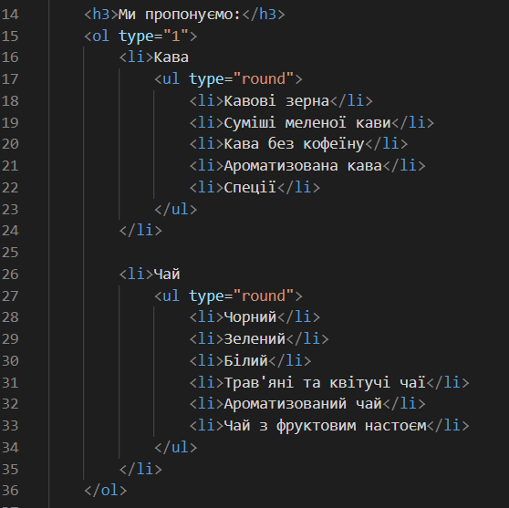
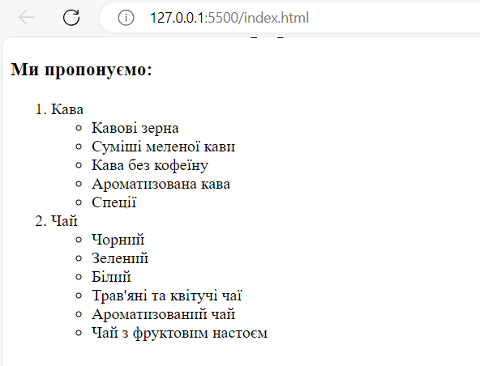
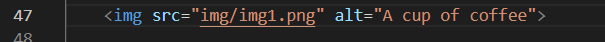
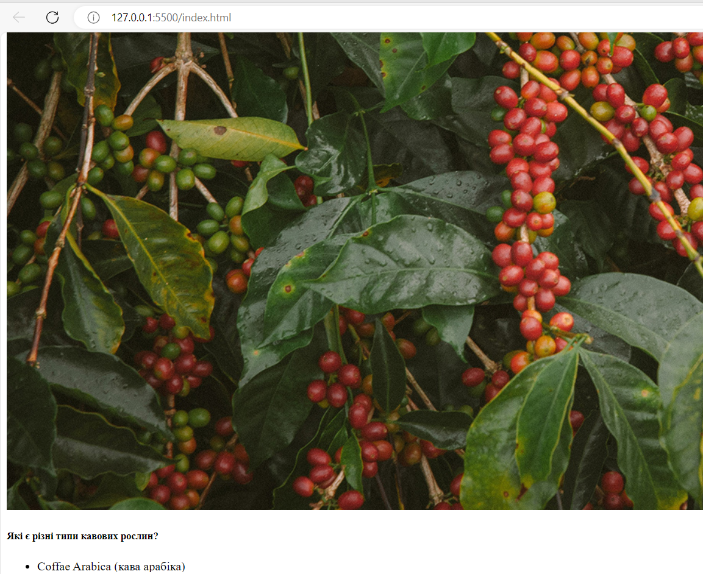

Предметна галузь: Електронна комерція. Інтернет-магазин продажу кави
Адмін
додавання товарів (кави, обладнання)
видалення товару
редагування товару, ціни
Користувач:
авторизація
перегляд товару
фільтрація позицій
додавання і видалення товару з кошика
оформлення замовлення
Тема:Структура html-документа. Вибір предметної галузі. Робота з посиланнями, таблицями, зображеннями, списками в HTML документі.
Мета: придбати практичні навички роботи з HTML-документом, таблицями, , зображеннями, посиланнями, списками, формами
Створити шаблон звітного HTML-документом для відображення результатів роботи всіх лабораторних робіт.
HTML таблиці дозволяють веб-розробникам упорядковувати дані у рядки та стовпці.
Тег <table> визначає HTML таблицю.
Кожен рядок таблиці визначається тегом <tr>. Кожен заголовок таблиці визначається тегом <th>. Кожна чарунка з даними таблиці визначається тегом td.
За замовчуванням текст в елементах <th> виділений жирним шрифтом і відцентрований.
За замовчуванням текст в елементах <td> є звичайним і вирівняним за лівим краєм.
Щоб додати межу до таблиці, використовуйте CSS властивість border
Щоб дозволити межам таблиці згортатися в одну межу, додайте CSS властивість border-collapse
HTML-код списку

Скріншот

Теорія
HTML Списки дозволяють веб-розробникам групувати набір пов’язаних елементів в списках.
Невпорядкований (ненумерований) список починається з тега <ul>. Кожний елемент списку починається з тега <li>.Елементи списку будуть помічені маркерами (маленькі чорні кола) за замовчуванням
CSS властивість list-style-type використовується для визначення стиля маркера елемента списку
Впорядкований (нумерований) список починається з тега <ol>. Кожний елемент списку починається з тега <li>. Елементи списку будуть помічені номерами за замовчуванням
Атрибут type тега <ol> визначає тип маркера елемента списка
HTML також підтримує списки опису.
Список опису - це список термінів з описом кожного терміна.
Тег <dl> визначає список опису, тег <dt> визначає термін (ім’я), а тег <dd> описує кожний термін:
HTML-код зображення

Скріншот

Теорія
Зображення можуть поліпшити дизайн і зовнішній вигляд веб-сторінки.
В HTML зображення визначаються за допомогою тега <img>
Тег <img> пустий, містить лише атрибути і не має закриваючого тега.
Атрибут src вказує URL (веб-адресу) зображення
Атрибут alt надає альтернативний текст для зображення, якщо користувач з якоїсь причини не може його переглянути: через повільне підключення до Інтернету, помилки в атрибуті src або якщо користувач використовує програму читання з екрану (скрінрідер). Значення атрибута alt має описувати зображення, тобто те, що на ньому зображено
Якщо браузер не може знайти зображення, він відображає значення атрибута alt.
Атрибути width и height використовуються для визначення розміру зображення. Завжди визначають ширину і висоту зображення в пікселях.
Висновки
Під час роботи над лабораторною роботою №1 отримано отримано знання як створювати HTML-документи, набуто практичні навички роботи з основними тегами таблиць, зображень, посиланнь, списків, форм.